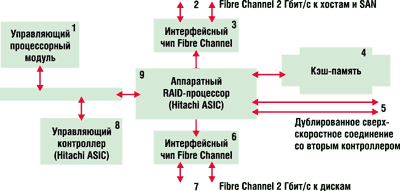

Игорь Колбин
Эксперты полагают, что в будущем инфраструктура хранения данных будет представлять собой синтез управляющего ПО и мощных интеллектуальных систем хранения, которые обеспечат администрирование с минимальными затратами, дополненное гибкостью расширения емкости, производительности и сетевых соединений.
В мае 2002 г. корпорация Hitachi Data Systems (http://www.hds.com) представила свою технологическую инициативу TrueNorth, ориентированную на открытые решения. Предполагается, что благодаря ей заказчики могут упростить, защитить и оптимизировать свои информационные инфраструктуры, снизить совокупную стоимость владения и ускорить возврат инвестированных средств. TrueNorth основывается на отраслевых стандартах, коллаборативной бизнес-модели с участием лидирующих на рынке независимых поставщиков ПО. Цель инициативы - создание единой архитектуры управления системами хранения данных. В частности, TrueNorth позволяет организациям интегрировать предпочтительные для них решения различных поставщиков и централизованно управлять ими посредством единой структуры. В рамках этой инициативы Hitachi Data Systems в конце прошлого года объявила о выпуске системы хранения Hitachi Freedom Storage Thunder 9500 V Series. Новинка, построенная по модульному принципу, обладает высоким быстродействием, обеспечивает централизованное управление и большую емкость при малой занимаемой площади.
Специалисты Hitachi Data Systems признают, что никакой отдельно взятый производитель не в состоянии удовлетворить все требования, которые сегодняшние предприятия предъявляют к системам хранения. Руководство корпорации полагает, что использование испытанных технологий Hitachi Freedom Storage Lightning 9900 V Series в системах Thunder 9500 V Series заново определяет понятие модульных дисковых массивов. Новое семейство Thunder ("Гром") наследует от серии Lightning ("Молния") концепцию виртуальных портов, а также набор API-интерфейсов, утилит и инфраструктуру администрирования. Клиенты получают возможность выбрать оптимальное решение, соответствующее конкретным задачам бизнеса, защищая свои инвестиции в долговременной перспективе.
Для систем хранения Thunder 9500 V Series характерна высокая гибкость и производительность, достаточная для ресурсоемких приложений. Интеллектуальные функции Thunder 9500 V упрощают администрирование. Начиная с напольных модулей (типа deskside) эти системы хорошо масштабируются и модернизируются - их корпус занимает небольшую площадь и легко наращивается. Сфера применения Thunder 9500 V Series включает различные приложения, работающие с большими объемами данных, в таких областях, как биотехнологии, розничные продажи, здравоохранение, телевидение и т. п. Во многих случаях применение подобных устройств обеспечивает быстрое развертывание хранилищ данных, систем углубленного анализа данных, непрерывно функционирующих систем обработки транзакций и приложений для работы с потоковым мультимедиа.
Архитектура Hi-PER
Thunder 9500 V Series по производительности примерно вдвое превосходит предшествующую систему благодаря использованию архитектуры Hi-PER (см. рисунок). Эта архитектура основана на применении массивов RAID и высокоскоростных межсоединений. Система снабжена буферной памятью объемом до 2 Гбайт на каждый контроллер. Дополнительная оптимизация параметров достигается за счет ПО FlashAccess, которое "блокирует" данные в кэш-памяти и обеспечивает малое время отклика. Высокая производительность в сочетании с большой емкостью и плотностью физического размещения делает Thunder 9500 V Series оптимальным решением для обслуживания интенсивного обмена данными в самых разных отраслях.
|  |
| Архитектура системы Hi-PER системы Thunder 9500 V Series.
|
Вот лишь некоторые функции и характеристики Thunder 9500 V Series:
- управление большими объемами данных с помощью единой консоли;
- консолидация дискового пространства в пул;
- упрощенная физическая структура, позволяющая снизить расходы;
- применение технологии виртуализации хранения;
- увеличение скорости обмена за счет применения высокопроизводительных контроллеров интерфейса;
- высокая интегрируемость, позволяющая защитить инвестиции.
Буква V в названии семейства не только обозначает "пятое поколение", но и указывает на концепцию виртуализации (Virtualization). Виртуализация хранения повышает эффективность управления, упрощает инфраструктуру и оптимизирует использование ресурсов.
Поскольку все модели Thunder 9500 V Series основаны на единой архитектуре Hi-PER, они включают универсальные высокоэффективные дисковые полки и универсальный микрокод, что обеспечивает хорошую интегрируемость. Стоит еще раз отметить, что архитектура Hi-PER удовлетворяет требованиям управления информационной системой динамично развивающегося предприятия, начиная от приложений для коллективной работы и кончая системами автоматизации бизнес-процессов.
Все модели Thunder 9500 V Series имеют усовершенствованную модульную конструкцию. Поэтому они быстро устанавливаются, конфигурируются и расширяются, позволяя обеспечить непрерывность работы бизнес-приложений и всей информационной системы компании.
Инфраструктура для развития бизнеса
Hitachi Data Systems предоставляет клиенту возможность выбрать для хранения данных мощную модель корпоративного класса Thunder 9570V или имеющие меньшую емкость заранее сконфигурированные модели Thunder 9531V, Thunder 9532V и Thunder 9533V. Эти системы позволяют реализовать высокий уровень доступности и производительности на базе таких технологий, как сети хранения данных (SAN) и подключаемые напрямую к сети системы хранения данных (NAS).
Thunder 9531V, 9532V и 9533V
Системы хранения Thunder 9531V, Thunder 9532V и Thunder 9533V выпускаются по специальной цене сконфигурированными на заказ. Они имеют емкость в пределах от 360 Гбайт до 1 Тбайт (другие их характеристики приведены в таблице) и заключаются в корпуса для напольного размещения рядом со столом (deskside). Предусмотрена поддержка RAID уровней 0, 1, 1+0 и 5. Заметим, что каждая из трех моделей может быть модернизирована до системы Thunder 9570V.
| Напольный вариант Thunder 9500 V Series.
|
Все три системы хранения могут стать удачным решением для сетей розничной торговли (имеются в виду как обычные, так и электронные магазины), стремящихся обеспечить высокое качество обслуживания клиентов. Они также прекрасно подойдут офисам компаний, которым для поддержания бизнеса нужна относительно небольшая емкость с возможностью ее наращивания. Заказчик может сам определить емкость, которая требуется ему сейчас, а впоследствии легко увеличивать ее по мере необходимости.
Эти три небольшие модульные конфигурации Thunder 9530 V Series, поставляемые готовыми к работе, реализуют одинаковую функциональность, включая замену компонентов в горячем режиме и архитектуру Hi-PER. Это позволяет обеспечить необходимый для непрерывности бизнеса круглосуточный доступ к данным. Все компоненты, отказ которых может привести к сбою всей системы, резервируются, в том числе в горячем режиме; таким образом, отсутствует единая точка отказа. К примеру, в системах используется зеркалированная кэш-память для записи с питанием от резервной батареи; при сбое в основном хост-компьютере происходит переключение на альтернативный; обновление микрокода осуществляется без прерывания работы.
Для Thunder 9530 V Series создано ПО мгновенного (Point-in-time) и удаленного копирования для резервирования и быстрого восстановления данных.
Система хранения Thunder 9570V
Данная система корпоративного класса позиционируется как удобное в управлении решение для предприятий с большими объемами данных и высокой степенью консолидации. Thunder 9570V прекрасно справляется с приложениями, скажем, в области биотехнологий и аналитической обработки. Медицинские учреждения могут использовать систему для быстрого доступа к истории болезней пациента и для выставления счетов, медиа-компании - для трансляции и обработки мультимедийных потоков, редактирования аудио- и видеозаписей и т. п.
Thunder 9570V выпускается в стоечной конфигурации и обеспечивает высокое быстродействие и емкость при малой занимаемой площади. Устройство включает четыре порта 2 Гбайт/с и может содержать 224 диска (32 Тбайт) на каждую систему; буферная память имеет объем до 4 Гбайт. С помощью Thunder 9570V заказчик сможет консолидировать существующие системы хранения в одной стойке. Это сокращает не только первоначальную стоимость приобретения, но и совокупную стоимость владения в течение всего жизненного цикла системы. Упростив инфраструктуру информационной системы и управление, можно сэкономить на эксплуатационных расходах и затратах на приобретение ресурсов.
| Система Thunder 9500 V Series в стойке.
|
Разработчики считают, что во многих случаях возможно заменить имеющиеся у заказчика несколько систем хранения на одну Thunder 9570V. Используемые в этой системе домены Host Storage Domains обеспечивают объединение в пул хост-компьютеров на уровне LUN для упрощения сетевой инфраструктуры соединений и оптимизации ее использования. При этом ПО Hitachi SANtinel гарантирует защиту от неавторизованного доступа к данным. Консолидация дисковых ресурсов и возможность совместного использования информации серверами на разных платформах сокращают ИТ-затраты. Уменьшается число операций управления и потребность в системных администраторах; кроме того, клиент может сэкономить на лицензировании и обслуживании.
Технические характеристики систем Thunder 9500V
| Thunder 9531V | Thunder 9532V | Thunder 9533V | Thunder 9570V | |
| Управляющий модуль/модули расширения | 3 EIA | 3 EIA | 3 EIA | 3 EIA |
| Максимальное число модулей расширения | 0 | 0 | 0 | 14+1 |
| Число дисковых накопителей | 5 | 9 | 13 | 4-224 |
| Физическая емкость, Гбайт | 358 | 645 | 931 | 32 Тбайт |
| Емкость для RAID-0 | Н/д | Н/д | Н/д | 32 Тбайт |
| Емкость для RAID-5, Гбайт | 201 | 410 | 696 | 30 Тбайт |
| Напольная модель | Да | Да | Да | Да |
| Максимальный размер кэш-памяти, Гбайт | 1 | 2 | 2 | 4 |
| Число контроллеров | 1 | 2 | 2 | 1 или 2 |
| Используемые жесткие диски | ||||
| 36 Гбайт 15 000 об./мин | Нет | Нет | Нет | Да |
| 73 Гбайт 10 000 об./мин | Да | Да | Да | Да |
| 73 Гбайт 15 000 об./мин | Нет | Нет | Нет | Да |
| 146 Гбайт 10 000 об./мин | Нет | Нет | Нет | Да |
| Максимальное число физических портов | 1 | 2 | 2 | 4 |
| Скорость, Гбит/с | 2 | 2 | 2 | 2 |
| Хостов на порт | 128 | 128 | 128 | 128 |
| Host Storage Domains | Да | Да | Да | Да |
| Число поддерживаемых ОС | 14 | 14 | 14 | 14 |
| F-порт, FL-порт | Да | Да | Да | Да |
| RAID-0, 1, 1+0 | Нет | Нет | Нет | Да |
| RAID-5 | Да | Да | Да | Да |
| Максимальное число групп RAID | 1 | 2 | 2 | 45 |
| Максимальное число LUN | 256 | 256 | 256 | 512 |
| Управление LUN | Да | Да | Да | Да |
| Резервирование и замена всех компонентов в горячем режиме | Да | Да | Да | Да |
| Hitachi Dynamic Link Manager (переключение при отказе) | Опция | Опция | Опция | Опция |
| Поддержка VERITAS DMP | Да | Да | Да | Да |
| Поддержка большинства других функций переключения при отказе | Да | Да | Да | Да |
| Резервная батарея | Да | Да | Да | Да |
| Максимальное число модулей в горячем резерве | 1 | 1 | 1 | 15 |
| Сетевое соединение для обслуживания | 2 | 2 | 2 | 2 |
| Hi-Track | Обязательно | Обязательно | Обязательно | Обязательно |
| TrueCopy | Нет | Нет | Нет | Опция |
| ShadowImage | Опция | Опция | Опция | Опция |
| Resource Manager | Стандартно | Стандартно | Стандартно | Обязательно* |
| HiCommand Device Manager | Опция | Опция | Опция | Опция |
| SANtinel | Стандартно | Стандартно | Стандартно | Опция |
| FlashAccess | Стандартно | Стандартно | Стандартно | Опция |
| SNMP | Стандартно | Стандартно | Стандартно | Опция |
HiCommand Management Framework
HiCommand Management Framework - набор открытых и интуитивно понятных инструментов для эффективного управления хранением данных распределенных корпоративных приложений. Это ПО разработано на основе промышленных стандартов, включая Common Information Model (CIM), Simple Object Access Protocol (SOAP) и eXtensible Markup Language (XML). Оно соответствует инициативе Bluefin Storage Management Initiative ассоциации Storage Networking Industry Association (SNIA). Соответствие стандартам гарантирует совместимость не только с ПО Hitachi Data Systems, но и с продуктами независимых разработчиков ПО. Открытый набор интерфейсов API HiCommand обеспечивает приложениям режим plug and play - заказчики получают свободу выбора оптимальных средств управления средой хранения данных. HiCommand также позволяет реализовать полезные сервисы, включая автоматизацию на основе политик, которая применяет деловые правила к операциям системы хранения данных.
HiCommand Management Framework настраивается и легко интегрируется в существующую инфраструктуру для оптимизации управления хранением данных. Особенности этого ПО помогают уменьшить продолжительность обучения системных администраторов и сократить совокупную стоимость владения, повысить производительность системы хранения.
Модуль HiCommand Device Manager, оснащенный единым графическим интерфейсом пользователя, позволяет через IP-соединение конфигурировать, контролировать и настраивать системы Thunder 9500 V Series, Hitachi Freedom Storage Lightning 9900 V Series и Lightning 9900 Series, а также системы Sun StorEdge 9900 Series и T3. Система поддерживает ряд протоколов сетей хранения данных и методов подключения, используемых различными приложениями, что упрощает организацию комплексов хранения на базе SAN, NAS и iSCSI. Модель Thunder 9500 V Series стандартно способна работать с протоколами Fibre Channel для SAN, гигабитным Ethernet для NAS, iSCSI для открытых систем и SAN.
Благодаря архитектуре Hi-PER, полной поддержке Fibre Channel и высокопроизводительных дисков данные системы способны легко обеспечивать параллельный доступ к информации по нескольким протоколам и соединениям.
Защита критически важной информации
Системы хранения Thunder 9500 V Series не только легко консолидируются и модернизируются, но и масштабируются без прерывания работы, поэтому приложения клиентов для групповой работы (такие, как Microsoft Exchange или Lotus Notes), хранилища данных, системы углубленного анализа данных, поддержки принятия решений и автоматизации бизнес-процессов (ERP) в ходе таких операций продолжают функционировать и остаются доступными.
Все критичные компоненты Thunder 9500 V Series резервированы; кроме того, система обеспечивает непрерывность бизнеса и защиту информации за счет быстрого резервного копирования и восстановления данных. Сервисное обслуживание также не требует прерывания работы системы благодаря архитектуре Hi-PER, технологии замены компонентов в горячем режиме и зеркалированной кэш-памяти. Мощный программный пакет Business Continuity Software Suite Thunder 9500 V Series позволяет добиться еще большей готовности данных и непрерывности работы критичных бизнес-приложений.
Thunder 9500 V Series поддерживает подключение к открытым системам как напрямую, так и через сеть, что облегчает и делает гибким процесс построения оптимальной инфраструктуры информационной системы, например, ориентированной на эффективную и надежную работу в условиях пиковых нагрузок.
Программное обеспечение
В числе поддерживаемых Thunder 9500 V Series операционных систем стоит в первую очередь отметить Sun Solaris, Microsoft Windows (NT и 2000), IBM AIX, HP-UX, Sequent DYNIX/ptx, SGI IRIX, Novell NetWare, HP Tru64 Unix, Red Hat Linux, SuSE Linux, Turbolinux, HP OpenVMS, а также NCR MP-RAS.
Программные решения Hitachi Freedom Storage, предназначенные для обслуживания систем Thunder 9500 V Series, включают следующие пакеты: Storage Area Management, Business Continuity, Backup and Recovery, Data Movement, Performance Enhancement.
Storage Area Management Suite
Пакет Storage Area Management Suite, включающий среду HiCommand Management Framework, инструментарий и диспетчер ресурсов Hitachi Resource Manager, решает многие проблемы управления хранением данных и позволяет сделать работу эффективнее. Открытая и расширяемая среда HiCommand Management Framework позволяет легко интегрировать и оптимизировать управление хранением для существующих инфраструктур и смешанных сред. Можно расширять HiCommand Management Framework, начав с модуля HiCommand Device Manager и вплоть до полного набора приложений для управления хранением данных.
Модули пакета позволяют клиенту практически из любой точки мира конфигурировать и контролировать системы Hitachi Freedom Storage Thunder 9200, Thunder 9500 V Series, Lightning 9900 V Series и Lightning 9900 Series, а также системы Sun StorEdge 9900 Series и T3. Работая на логическом или физическом уровне, Device Manager упрощает управление системами хранения данных, позволяя более эффективно использовать имеющиеся ИТ-ресурсы.
Идеальное решение для простых сред - Resource Manager, пакет утилит управления, включающий инструменты Hitachi FlashAccess, LUN Manage и SANtinel. Пакет рассчитан на системных администраторов, которым требуется гибкое удобное средство конфигурирования и обработки ошибок. Пользователи могут контролировать системы хранения и управлять ими с помощью графического интерфейса или командной строки. Resource Manager предоставляет важную информацию об использовании ресурсов (работа подсистемы ввода-вывода, использование кэш-памяти и степень готовности, а также оповещение о событиях), которая помогает оптимизировать производительность. Администраторы с помощью утилиты Password Protection могут авторизовать до 20 пользователей. SANtinel контролирует доступ хостов к LUN системы Thunder 9500 V Series в среде SAN, предотвращая для неавторизованных пользователей запись данных на диски, выделенные серверам.
Для гибкого конфигурирования системы хранения, обеспечивающего высокую и надежную производительность, можно использовать программу VERITAS Volume Manager, входящую в состав пакета VERITAS Foundation Suite.
Business Continuity Suite
Грамотная стратегия обеспечения непрерывности бизнеса необходима любому предприятию. Реализовать ее поможет пакет Business Continuity Suite, базирующийся на технологии Hitachi TrueCopy (для системы Thunder 9570V). Он включает программное обеспечение Hitachi ShadowImage и Hitachi Dynamic Link Manager, сервис Hi-Track и сервисы защиты данных (Data Protection Services).
Инструментарий TrueCopy выполняет репликацию информации - либо локально между системами Thunder 9570V в пределах одного центра обработки данных, либо удаленно между географически распределенными площадками. Репликация при этом почти не влияет на производительность. TrueCopy эффективно защищает критически важные данные, созданные вплоть до момента сбоя, и устраняет необходимость в сложном ручном процессе восстановления с магнитной ленты.
Программа создает копии LUN внутри системы без прерывания сервисов и критически важных приложений. В результате можно чаще полностью выполнять резервное копирование и тестирование. Время развертывания приложений сокращается, а критически важная информация оказывается защищенной.
Еще одно средство, Hitachi Command Control Interface, дает возможность пользователям открытых систем запускать на своих хост-компьютерах программы для управления инструментами TrueCopy и ShadowImage. Благодаря этому можно автоматически выполнять в пакетном режиме операции копирования, используя интерфейс командной строки.
ПО Dynamic Link Manager обеспечивает автоматическое выравнивание нагрузок между каналами, переключение на резервный канал при отказе основного и восстановление. Это полностью исключает перегрузку одного канала при недозагрузке или недоступности других. Система профилактического обслуживания Hi-Track выполняет непрерывный мониторинг систем Thunder 9500 V Series и автоматически передает собранную информацию о состоянии аппаратуры в центр технической поддержки Hitachi Data Systems, который предпринимает необходимые действия для устранения потенциальных проблем. Эта схема сокращает время обнаружения и устранения неисправностей для поддержания высокой производительности системы.
Backup and Recovery Suite
Сотрудничество Hitachi Data Systems с ее стратегическими партнерами расширяет для клиентов возможности оптимизации процессов, связанных с резервированием. Пакет VERITAS NetBackup обеспечивает быстрое и надежное резервное копирование и восстановление в гетерогенной среде, причем объемы данных могут исчисляться терабайтами и даже петабайтами. Опция VERITAS NetBackup Array Integration и программный агент VERITAS NetBackup ServerFree Agent, тесно интегрированные с функциями ShadowImage и Hitachi e-Copy, позволяют автоматизировать зеркальное копирование на системы Hitachi Freedom Storage без прерывания работы приложений. Для защиты данных предлагается также CommVault Galaxy.
Performance Enhancement Suite
Этот мощный пакет включает программы FlashAccess и Dynamic Link Manager, ускоряющие доступ к хранящейся на системах Thunder 9500 V Series информации. FlashAccess помогает обеспечить необходимую максимальную физическую емкость и в то же время очень быстрый доступ к информации. Dynamic Link Manager автоматизирует балансировку нагрузки ввода-вывода, переключение с основного канала на резервный и восстановление основного канала после устранения сбоя.
Средства Performance Enhancement Suite вместе с технологией виртуализации Thunder 9500 V Series помогают избежать простоев, гарантируя достижение высокой производительности и масштабируемости без специальных настроек. В числе прочего программы пакета позволяют в режиме реального времени "запирать" данные в кэш-памяти, а также выполнять чтение и запись со скоростью кэш-памяти (это устраняет задержки, связанные с доступом к жесткому диску).
В заключение стоит еще раз отметить, что высококачественные модульные системы Hitachi оптимальны для задач консолидации хранения. Они хорошо подходят для построения централизованной системы хранения в больших и средних предприятиях, а также в распределенной среде в компаниях с развитой организационной инфраструктурой отделов и участков.